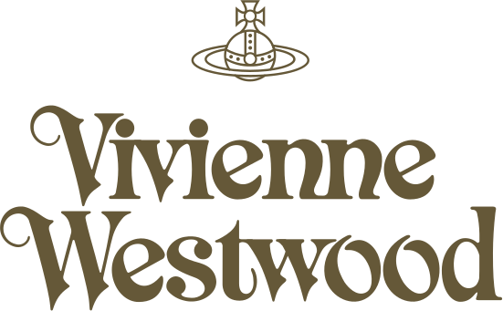

The slow fashion or conscious fashion movement has risen in opposition to fast fashion, naming responsibility for pollution (both in the production of clothes and in the decay of synthetic fabrics), poor workmanship, and emphasizing very brief trends over classic style. Elizabeth L. Cline's 2012 book Overdressed: The Shockingly High Cost of Cheap Fashion was one of the first investigations into the human and environmental toll of fast fashion. Fast fashion has also come under criticism for contributing to poor working conditions in developing countries.
The 2013 Dhaka garment factory collapse in Bangladesh, the deadliest garment-related accident in world history, brought more attention to the safety impact of the fast fashion industry.
In the rise of slow fashion, emphasis has been given to quality, considerate clothing. In recent Spring/Summer Fashion Show 2020, high end designers are leading the movement of slow fashion by creating pieces that develop environmental friendly practices in the industry.
Stella McCartney is one luxury designer who focuses on sustainable and ethical practices, and has done so since the nineties. British Vogue explains that the process of designing and creating clothing in slow fashion involves consciousness of materials, consumers demand, and the climate impact.
In her recent article titled “Doing Good and Looking Good: Women in ‘Fast Fashion’ Activism”, Rimi Khan criticizes the slow fashion movement, particularly the work of high-profile designers and slow fashion advocates Stella McCartney and Vivienne Westwood, as well as other well known industry professionals such as Livia Firth, for creating slow fashion products which cater to a mostly western, wealthy, and female demographic.
Khan points out that because most slow fashion products are significantly more expensive than fast fashion items, consumers are required to have a certain amount of disposable income in order to participate in the movement.
Khan argues that by proposing a solution to fast-fashion that is largely inaccessible to many consumers, they are positioning wealthier women as “agents of change” in the movement against fast fashion, whereas the shopping habits of lower income women and people of other genders are often considered “problematic”.
Andrea Chang provides a similar critique of the slow fashion movement in her article “The Impact of Fast Fashion on Women”. Chang argues that the slow fashion and ethical fashion movements place too much responsibility on the consumers of fast fashion clothing, most of whom are women, to influence the industry through their consumption. Chang suggests that because most consumers are limited in their ability to choose where and how they purchase clothing, largely due to financial factors, anti-fast fashion activists should target lawmakers, manufacturers, and investors with a stake in the fast fashion industry rather than create an alternative industry that is only accessible to some.